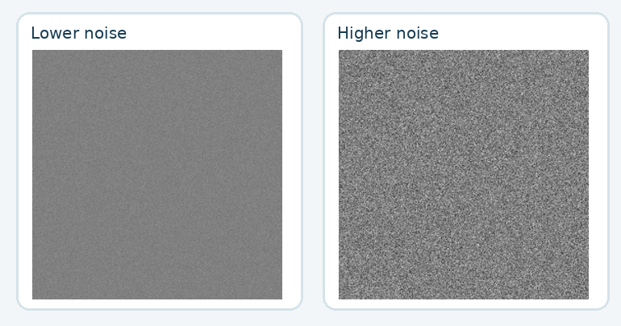

← Tutorial hub · 1D Fourier Lab · Pixel & Quantisation Lab

Tutorial 3 · 60 minutes
Waves, pixels and ImageJ FFT filtering. Use the browser for 1D waves and quantisation, then ImageJ to remove low and high spatial frequencies.
Tutorial 3 instructions + answers1D Fourier LabPixels & quantisation
Tutorial 4 · 60 minutes
Windowing, LUTs, histograms, noise and DICOM. Complete the ImageJ steps using the supplied teaching images.
Tutorial 4 instructions + answersDownloads and setup
All practice images (ZIP) Mixed image (PNG)
All images are synthetic and contain no patient data. Calculations use an explicitly assumed physical field of view. The interactive tools store no student progress and do not submit scores.
The 2D FFT filtering activity uses ImageJ only. The browser Pixel & Quantisation Lab deliberately does not perform FFT filtering.